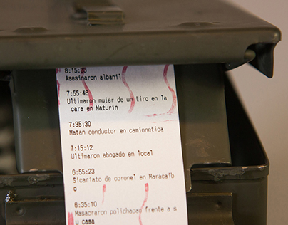

Nonhuman drawing machines are mechanical interfaces with the environment. They free the human author from representational constraints and allow another type of drawing process to unfold. The result is a temporal document that records a specific material interaction by a specific set of forces across time. Examples include: "Massage Me" (2014), Simone Giertz's "Shi**ty Robots", and "Murder Machine" by Diego Zaks (2014)

Capacitive sensing is a technology, based on capacitive coupling, that can detect and measure anything that is conductive or has a dielectric constant different from air. I worked with Cowry again this week, and we worked together to construct the exercise. We played around with different foil shapes, and even attempted using a leaf. This week was more focused on the discussion of the "final project", and therefore only one Arduino exercise was conducted this session.
Final Project Discussion: